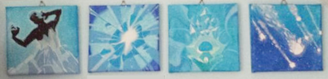
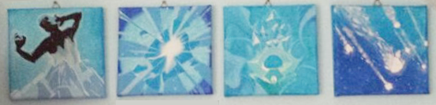

Art & Creativity
I love creating things. It doesn't matter whether these things are physical or digital, I simply love to learn a new skill and put it to use.
I started with knitting a lot of scarves, then sewing plushies, creating pixel art and painting with acrylic paints (mostly dedicated to games).
I started with knitting a lot of scarves, then sewing plushies, creating pixel art and painting with acrylic paints (mostly dedicated to games).
Sewing
One of my earliest creative outlet on the internet (other than web design which you can find under Web) was to sew plushies for friends, family and myself.
One of my earliest creative outlet on the internet (other than web design which you can find under Web) was to sew plushies for friends, family and myself.
Pixel Art
Ever since I can remember, I was always fascinated by what you can do with really precise edges which I think pixel art just thrives off. Most of these were used for DeviantArt avatars, hence the specific size.


Ever since I can remember, I was always fascinated by what you can do with really precise edges which I think pixel art just thrives off. Most of these were used for DeviantArt avatars, hence the specific size.
Painting
Acrylic paint is honestly one of my favorite mediums because it dries fast, mixes well and it is (mostly) true to its colors. Which means that I can imagine the outcome while I'm laying down the color.
This is a collection of my game related art.
DotA 2
I painted these dota 2 Icons (15x15cm) for my friends. Looking back at these, I love how you can see me improve and learn through every finished painting.

Other Games
Goat Simulator
Destiny 2
Acrylic paint is honestly one of my favorite mediums because it dries fast, mixes well and it is (mostly) true to its colors. Which means that I can imagine the outcome while I'm laying down the color.
This is a collection of my game related art.
DotA 2
I painted these dota 2 Icons (15x15cm) for my friends. Looking back at these, I love how you can see me improve and learn through every finished painting.

Other Games
Goat Simulator
Destiny 2
I am fascinated by the moon and try to capture it whenever I can. Over the years I have collected a good amount of (unfortunately) bad pictures of the moon that I collect on this dedicated instagram page.